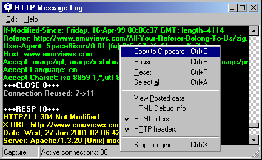

The log window is used to display useful information about ongoing activity. This includes HTTP header messages sent between your web browser and the Internet, and information on which web page filters matched a particular page. To see them click the "Log Window" button on Proxomitron's main window. Messages are only logged while the log window is open and are lost when the window is closed. This is for efficiency's sake since always logging all information might slow down Proxomitron operations. Log windows messages can however be saved to the windows clipboard - first select the messages then either click the "Copy" option from the log window's "Edit" menu, or press CTRL-INSERT.

Other options on the edit of interest menu include...
| Pause | Temporarily suspends logging |
| Reset | Clears the log window |
| View Posted data | See stuff your browser sends in "POST" commands |
| HTML Debug Info | Show webpages as source to see what the filters are up to |
| HTML filters | Enable/disable logging of web page filter matches |
| HTTP filters | Enable/disable logging of header messages |
The edit menu can also be accessed by right-clicking anywhere over the log window.
Log window messages are color coded...
| Green | :Request messages from your browser to the Internet |
| Yellow | :Response messages from an Internet web server to your browser |
| White | :Informational - such as the start and end of new connections (less important ones are gray) |
| Red | :Error messages |
| Violet | :Web page filter matches |
| Cyan | :Proxy test progress messages |
The HTTP request and response header messages allow you to view the normally hidden conversation that takes place whenever your browser requests a web page. For details on what these messages can tell you see HTTP Header Filters
Since requests for web pages may come in any order and are often mixed together, the Proxomitron numbers all requests your browser makes. You can use these number to track, for instance, which request goes with which reply.
Inserting HTML Debug Info
Under the log window's menu is an option to insert "debug info" into webpages. When this is checked, all webpages will be shown as text. Areas of the page that were modified by your web filters will be highlighted allowing you to easily see exactly what changes each filter has made. This can be Very helpful, and should be the first thing you try when debugging a filter that's causing a problem or not matching what you expect. Here's a sample of the debug output...
(Note: this is shown in your browser - not in the log itself)
<TABLE WIDTH=640 BORDER=0 CELLPADDING=0 CELLSPACING=0> <TR ALIGN=RIGHT> <TD WIDTH=110> <IMG SRC="../images/spacer.gif" WIDTH=103 HEIGHT=85> </TD> <TD WIDTH=530 ALIGN=CENTER> <!--Foobar Advertising Corporation--><CENTER> <Match: Banner Blaster> <A HREF="http://www.foobar.org/cgi-bin/bannerlink.pl?"><IMG SRC="http://www.foobar.org/cgi-bin/banner.cfg?" ALT="Our Sponsor"></A> </Match> <center> <Match: Frame Jumper-Outer> <A HREF="http://www.foobar.org/cgi-bin/bannerlink.pl?"> </Match> <a target=_top HREF="http://www.foobar.org/cgi-bin/bannerlink.pl?"><font size=1 color=red>[Our Sponsor]</font></A></center></CENTER> </TD> </TR> <TR> |
The original text each filter matches is shown here in red surrounded by...
<Match (filter's name)>
Original web page text matched
</Match>
The filter's output will be the text that follows directly after. In the example above you can see that two filters actually matched. First the banner blaster ate a banner ad, then the "Frame Jumper-Outer" filter matched the link produced by the banner blaster! In this way you can tell exactly what these filters are doing to the web page's HTML.
 Return to main index
Return to main index